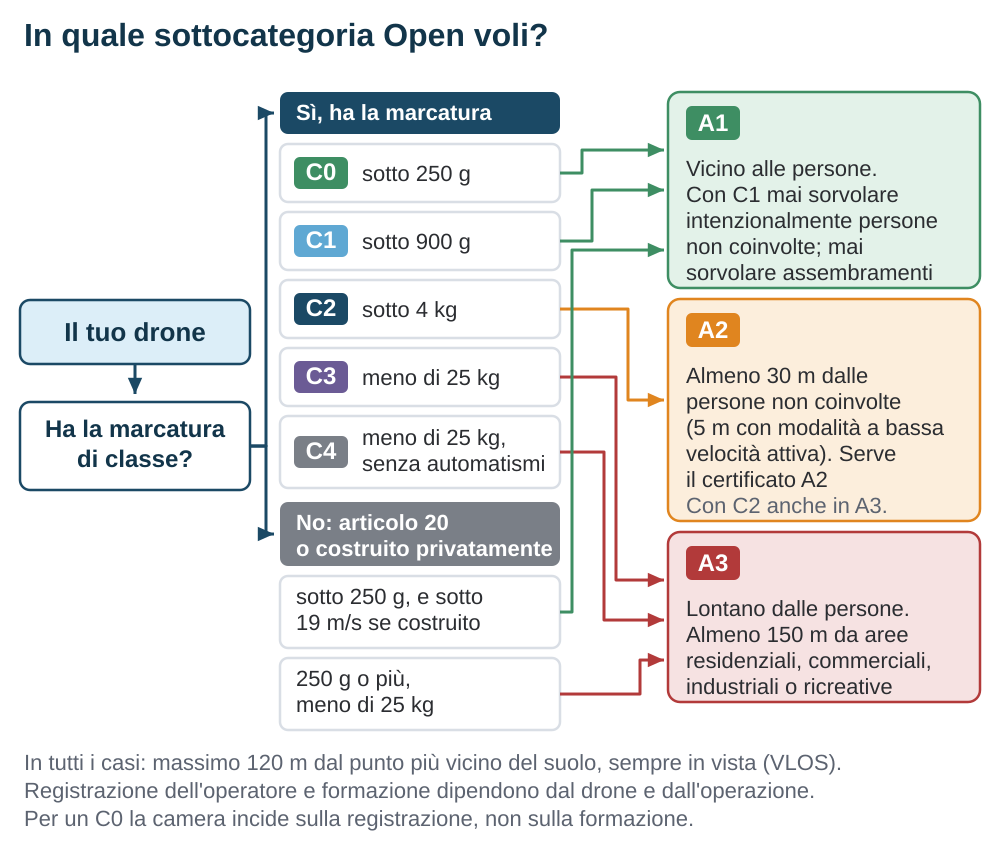
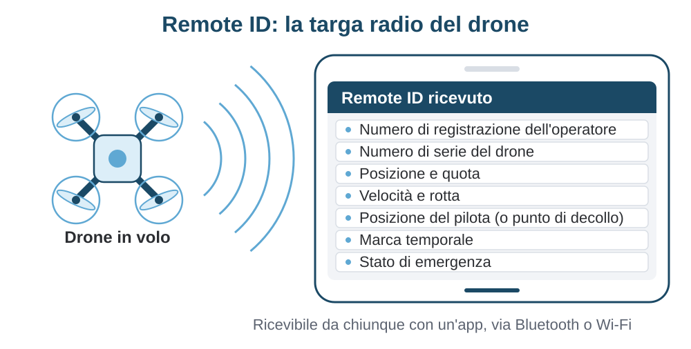

Il quadro normativo europeo
Dal 31 dicembre 2020 i droni in Europa seguono un unico insieme di regole, uguale a Lisbona come a Trieste. Questo capitolo lo smonta pezzo per pezzo: le tre categorie di rischio, le sottocategorie della categoria Open, le marcature di classe, la registrazione, la formazione, il Remote ID. È il capitolo più denso della guida, ma è anche quello che ti evita le multe.
- Chi fa le regole e con quali strumenti
- Tre categorie, un solo criterio: il rischio
- Operatore e pilota remoto
- La categoria Open: regole comuni
- Le sottocategorie A1, A2 e A3
- Le marcature di classe C0-C6
- Droni senza marcatura e autocostruiti
- La formazione del pilota
- Remote ID e geo-awareness
- Zone geografiche, assicurazione, segnalazioni
Fonti normative verificate il 20 settembre 2026.
4.1 Chi fa le regole e con quali strumenti
Fino al 2020 ogni Stato europeo aveva le proprie regole sui droni. In Italia c'era il regolamento ENAC sui «mezzi aerei a pilotaggio remoto», in Francia e Germania altri testi, con soglie di peso, distanze e obblighi diversi. Un drone comprato a Milano e portato in vacanza in Croazia cambiava status giuridico attraversando il confine. Il legislatore europeo ha chiuso questa fase con due regolamenti, preparati dall'EASA, l'agenzia europea per la sicurezza aerea, e adottati dalla Commissione.
Il primo è il Regolamento di esecuzione (UE) 2019/947, che stabilisce le regole e le procedure per far volare un drone: le categorie di operazione, i limiti, la registrazione, la formazione dei piloti. È applicabile dal 31 dicembre 2020. Il secondo è il Regolamento delegato (UE) 2019/945, che invece guarda al prodotto: definisce le classi di drone C0-C6, i requisiti tecnici che il costruttore deve rispettare per apporre la marcatura di classe e gli obblighi di chi importa o vende. Il primo parla a te che voli; il secondo parla a chi progetta e vende il drone, ma decide quale etichetta troverai sulla scatola, e quindi cosa potrai fare.
Un regolamento europeo si applica direttamente in tutti gli Stati membri, senza bisogno di leggi nazionali di recepimento. Gli Stati mantengono però alcune competenze, elencate espressamente dal regolamento: gestire la registrazione degli operatori, organizzare gli esami, definire le zone geografiche in cui il volo è vietato o limitato, fissare l'età minima entro certi margini, decidere gli obblighi assicurativi per i droni leggeri. Per l'Italia queste competenze sono esercitate dall'ENAC, e le vedrai nel capitolo 5.
I due regolamenti sono stati modificati più volte dal 2020 a oggi: per spostare le date di transizione, per aggiungere gli scenari standard della categoria Specific e, con il Regolamento (UE) 2024/1110 applicabile dal maggio 2025, per completare le regole della categoria Certified. Il modo più comodo per leggerli è la raccolta Easy Access Rules for Unmanned Aircraft Systems pubblicata dall'EASA, che fonde il testo dei regolamenti con le linee guida (AMC e GM) in un unico documento consolidato. È gratuita, aggiornata a ogni modifica e ha una versione navigabile online.
4.2 Tre categorie, un solo criterio: il rischio
Il regolamento 2019/947 ordina tutte le operazioni con droni in tre categorie, in base al rischio per le persone a terra e per gli altri aeromobili.
La categoria Open (in italiano «aperta») raccoglie le operazioni a basso rischio. Non richiede autorizzazioni preventive: se rispetti i limiti fissati dal regolamento, puoi volare. I limiti sono rigidi e sempre uguali: drone sotto i 25 kg, volo a vista, quota massima di 120 m dal suolo, nessun trasporto di merci pericolose, nessun lancio di oggetti. È la categoria che riguarda la quasi totalità degli hobbisti e molti professionisti, ed è quella che questo capitolo tratta a fondo.
La categoria Specific («specifica») copre ciò che esce dai limiti della Open: volare oltre la linea di vista, superare i 120 m, operare sopra persone con droni pesanti, in città con macchine di classe superiore. Qui serve un'autorizzazione dell'autorità nazionale, rilasciata dopo una valutazione del rischio, oppure una dichiarazione per gli scenari già standardizzati. Il capitolo 6 ne dà una panoramica.
La categoria Certified («certificata») è riservata alle operazioni a rischio comparabile con l'aviazione tradizionale: trasporto di persone, trasporto di merci pericolose, sorvolo di assembramenti con droni grandi. Richiede la certificazione del drone, dell'operatore e la licenza del pilota, come per un aereo di linea. Non riguarda chi legge questa guida, se non come orizzonte del settore.
| Categoria | Rischio | Cosa serve prima di volare | Esempi |
|---|---|---|---|
| Open | Basso | Nulla di preventivo: registrazione dell'operatore e attestato del pilota, poi si vola nei limiti | Foto e video a vista in campagna, ispezione di un tetto, volo FPV con osservatore |
| Specific | Medio | Autorizzazione operativa dell'autorità (ENAC), oppure dichiarazione per uno scenario standard | Volo oltre la linea di vista, rilievo di una linea elettrica, ripresa in centro storico con drone pesante |
| Certified | Alto | Certificazione di drone e operatore, licenza del pilota | Trasporto di persone, consegna di merci pericolose, sorvolo di folle con droni grandi |
4.3 Operatore e pilota remoto
Il regolamento distingue due ruoli che spesso coincidono nella stessa persona, ma non sempre. L'operatore UAS è la persona fisica o giuridica che possiede il drone o lo noleggia e che risponde dell'operazione: è lui che si registra, che deve avere l'assicurazione, che assicura che il drone sia in ordine e che il pilota sia formato. Il pilota remoto è chi comanda materialmente il volo e ne risponde per la condotta: rispettare quota, distanze, zone, cedere il passo agli altri aeromobili. Se compri un drone e lo fai volare tu, sei entrambi. Se un'azienda ha tre droni e cinque dipendenti abilitati, l'azienda è l'operatore e i dipendenti sono i piloti.
La registrazione dell'operatore
L'operatore deve registrarsi presso l'autorità dello Stato in cui risiede (per le persone fisiche) o ha la sede principale (per le organizzazioni). La registrazione è obbligatoria quando il drone ha una massa al decollo di 250 g o più, oppure, anche sotto i 250 g, quando è dotato di un sensore in grado di raccogliere dati personali, cioè in pratica di una camera, a meno che non sia un giocattolo ai sensi della direttiva 2009/48/CE. In concreto: quasi tutti i droni con camera richiedono la registrazione, anche i più piccoli. È inoltre sempre obbligatoria per operare in categoria Specific.
La registrazione produce un numero di registrazione dell'operatore con formato armonizzato: il codice del Paese seguito da dodici caratteri alfanumerici, più tre caratteri «segreti» che non si espongono e servono solo per il Remote ID. Il numero va apposto in modo visibile su ogni drone dell'operatore, con un'etichetta o un'incisione, e va caricato nel sistema di identificazione a distanza del drone, quando presente. La registrazione fatta in uno Stato membro vale in tutta l'Unione: se ti registri in Italia puoi volare in Spagna con lo stesso numero, senza registrarti di nuovo. Non ci si può registrare in due Stati.
Il pilota remoto non si registra. Il pilota consegue invece un attestato di competenza, che vedremo nella sezione 4.8, e che vale anch'esso in tutta l'Unione.
4.4 La categoria Open: regole comuni
Prima di dividersi nelle sottocategorie, la categoria Open impone a tutti le stesse regole di base. Vale la pena impararle una per una, perché sono le domande dell'esame e, soprattutto, le condizioni che rendono legale il tuo volo.
- Massa massima al decollo sotto i 25 kg. Sopra, si è per definizione fuori dalla Open.
- Quota massima di 120 m dal punto più vicino della superficie terrestre. Il riferimento è il terreno sotto il drone, non il punto di decollo: su un pendio la quota ammessa segue il pendio. Un'eccezione: entro 50 m in orizzontale da un ostacolo artificiale più alto di 105 m, come una torre o un traliccio, puoi salire fino a 15 m sopra la sua sommità, su richiesta di chi è responsabile dell'ostacolo. Serve a ispezionarlo.
- Volo in linea di vista, VLOS: il pilota deve vedere il drone a occhio nudo, senza binocoli, abbastanza bene da conoscerne posizione e orientamento e da evitare altri aeromobili. Il volo con occhiali FPV è permesso solo se accanto al pilota c'è un osservatore che tiene il drone in vista e lo avverte dei pericoli.
- Nessuna merce pericolosa a bordo e nessun lancio di materiale.
- Distanza di sicurezza dalle persone, secondo la sottocategoria, e in ogni caso mai sopra un assembramento, cioè un gruppo di persone così fitto che nessuno può allontanarsi liberamente: un concerto, una piazza durante una manifestazione, una spiaggia affollata.
- Rispetto delle zone geografiche definite dallo Stato in cui voli (sezione 4.10).
- Precedenza sempre agli aeromobili con equipaggio. Se vedi o senti un elicottero o un aereo leggero, scendi e ti allontani.
- Età minima del pilota: 16 anni. Gli Stati possono abbassarla fino a 12 anni per le sottocategorie A1 e A3 e fino a 14 per la A2. Sotto l'età minima si può volare con un drone giocattolo di classe C0, oppure sotto la supervisione diretta di un pilota che abbia l'età e l'attestato richiesti.
4.5 Le sottocategorie A1, A2 e A3
Le tre sottocategorie della Open rispondono a una sola domanda: quanto vicino alle persone puoi volare. La risposta dipende dalla classe del drone, e quindi dalla sua massa. Lo schema della Figura 4.1 la riassume; le sezioni che seguono la spiegano.

A1: vicino alle persone
La sottocategoria A1 permette di volare vicino a persone non coinvolte, purché con droni molto leggeri: classe C0 (sotto i 250 g) o classe C1 (sotto i 900 g). La differenza tra le due classi è sottile ma importante. Con un C0 puoi anche sorvolare persone non coinvolte, purché non un assembramento. Con un C1 non devi sorvolarle intenzionalmente: se succede, devi ridurre al minimo il tempo di sorvolo. La logica è quella dell'energia cinetica vista nel capitolo 1: sotto i 250 g il danno potenziale in caso di caduta è considerato trascurabile.
Rientrano in A1 anche i droni autocostruiti sotto i 250 g e con velocità massima sotto i 19 m/s, e i droni senza marcatura di classe sotto i 250 g (sezione 4.7).
A2: a distanza controllata
La sottocategoria A2 è riservata alla classe C2 (sotto i 4 kg) e permette di volare in ambienti dove ci sono persone, tenendosi però ad almeno 30 m in orizzontale da quelle non coinvolte. Se il drone dispone della modalità a bassa velocità, che limita la velocità al suolo a 3 m/s, la distanza si riduce a 5 m. In pratica un C2 in A2 può lavorare in una piazza poco frequentata o in un cantiere, ma non sopra la testa della gente. Per la A2 il pilota deve avere, oltre all'attestato base, un certificato di competenza A2 ottenuto con un esame aggiuntivo (sezione 4.8).
A3: lontano da tutto
La sottocategoria A3 raccoglie tutto il resto: le classi C2, C3 e C4 fino a 25 kg, i droni autocostruiti fino a 25 kg e i droni senza marcatura di classe da 250 g in su. Le regole compensano il maggior rischio con la distanza: si vola solo dove ragionevolmente non si mettono in pericolo persone non coinvolte, e ad almeno 150 m in orizzontale da aree residenziali, commerciali, industriali o ricreative. Il caso tipico è il campo aperto in campagna, lontano da case e strade frequentate.
| Sotto- categoria | Classi ammesse | Massa | Distanza dalle persone non coinvolte | Formazione del pilota |
|---|---|---|---|---|
| A1 | C0 senza marcatura <250 g autocostruiti <250 g | < 250 g | Sorvolo consentito, mai su assembramenti | Lettura del manuale (attestato A1/A3 consigliato) |
| A1 | C1 | < 900 g | Nessun sorvolo intenzionale; ridurre al minimo se accade; mai su assembramenti | Attestato A1/A3 (esame online) |
| A2 | C2 | < 4 kg | Almeno 30 m; 5 m in modalità a bassa velocità (≤ 3 m/s) | Attestato A1/A3 + autoformazione pratica dichiarata + esame A2 |
| A3 | C2 C3 C4 senza marcatura ≥250 g autocostruiti <25 kg | < 25 kg | Nessuna persona non coinvolta in pericolo; almeno 150 m da aree residenziali, commerciali, industriali, ricreative | Attestato A1/A3 (esame online) |
4.6 Le marcature di classe C0-C6
La marcatura di classe è un'etichetta, con una «C» e un numero dentro un riquadro, che il costruttore appone sul drone dopo aver dimostrato la conformità ai requisiti del Regolamento 2019/945 per quella classe. Funziona come la marcatura CE, di cui è un'estensione specifica: dichiara che il prodotto rispetta un insieme di requisiti armonizzati, e il costruttore ne risponde. Per le classi più alte la conformità è verificata da un organismo notificato, un ente terzo accreditato. La marcatura si accompagna a un'informativa nella confezione che spiega i limiti d'uso e le sottocategorie in cui il drone può operare.
Ogni classe fissa un pacchetto di requisiti: massa massima, velocità massima, limite di quota impostabile, robustezza, sicurezza elettrica, comportamento in caso di perdita del link, presenza di luci, limiti di rumore, e per le classi da C1 in su il sistema di identificazione a distanza (Remote ID) e la funzione di geo-awareness (sezione 4.9). La Tabella 4.3 ne riassume gli elementi essenziali.
| Classe | Massa e prestazioni | Requisiti caratteristici | Sotto- categorie |
|---|---|---|---|
| C0 | < 250 g; velocità ≤ 19 m/s; quota massima 120 m (o impostabile) | Alimentazione elettrica a bassa tensione; niente spigoli pericolosi; se giocattolo, conforme alla direttiva giocattoli. Nessun Remote ID, nessuna geo-awareness | A1 |
| C1 | < 900 g oppure energia d'impatto < 80 J; velocità ≤ 19 m/s; quota impostabile | Remote ID diretto; geo-awareness; avviso di batteria scarica; luce verde lampeggiante; limiti di rumore; gestione della perdita del link | A1 |
| C2 | < 4 kg; quota impostabile | Come C1, più modalità a bassa velocità (≤ 3 m/s) selezionabile; possibilità di volo vincolato con cavo | A2, A3 |
| C3 | < 25 kg; dimensione caratteristica < 3 m; quota impostabile | Remote ID diretto; geo-awareness; luci; gestione della perdita del link | A3 |
| C4 | < 25 kg | Nessuna modalità automatica oltre alla stabilizzazione e all'assistenza in caso di perdita del link. Pensata per l'aeromodellismo. Nessun Remote ID richiesto | A3 |
| C5 | Derivata dalla C3 | Modalità a bassa velocità, sistema di terminazione del volo, geo-caging. Serve per lo scenario standard STS-01 (categoria Specific) | Specific |
| C6 | Derivata dalla C3; velocità ≤ 50 m/s | Terminazione del volo, geo-caging programmabile, precisione di posizione. Serve per lo scenario standard STS-02 (categoria Specific) | Specific |
4.7 Droni senza marcatura e autocostruiti
Quando il regolamento è entrato in vigore, quasi nessun drone in circolazione aveva una marcatura di classe. Per non mettere a terra milioni di macchine, il legislatore ha previsto un periodo di transizione, prolungato due volte e chiuso il 31 dicembre 2023. Fino ad allora i droni «legacy», cioè immessi sul mercato senza marcatura, godevano di regole ponte: quelli tra 500 g e 2 kg, ad esempio, potevano volare in una A2 «attenuata» a 50 m dalle persone.
Dal 1º gennaio 2024 la regola è semplice e definitiva. Un drone senza marcatura di classe con massa al decollo sotto i 250 g vola in A1, con le stesse regole di un C0. Un drone senza marcatura da 250 g in su, fino a 25 kg, vola solo in A3. Non c'è modo di portarlo in A2, né di farlo volare vicino alle persone. In alternativa può essere usato in categoria Specific con un'autorizzazione, che però è un percorso da professionisti (capitolo 6).
I droni autocostruiti, cioè assemblati per uso personale a partire da componenti, seguono la stessa logica: sotto i 250 g e sotto i 19 m/s in A1, altrimenti in A3 fino a 25 kg. Chi si avvicina al mondo FPV lo incontra subito: un quadricottero da 5 pollici autocostruito pesa tipicamente 500-700 g con batteria e vola quindi in A3, in campagna e lontano dalle case. I «micro» sotto i 250 g, invece, possono volare in A1, ed è uno dei motivi del loro successo.
4.8 La formazione del pilota
La categoria Open prevede due livelli di formazione, entrambi teorici, con un'aggiunta di pratica autocertificata per il secondo. Nessuno dei due richiede ore di volo con istruttore, e questo è un vantaggio e un rischio: la responsabilità di saper pilotare è tutta tua.
L'attestato A1/A3 si ottiene seguendo un corso online e superando un esame, anch'esso online, di 40 domande a risposta multipla, con soglia di superamento al 75%. Gli argomenti sono fissati dal regolamento: sicurezza aerea, restrizioni dello spazio aereo, regolamentazione aeronautica, limiti delle prestazioni umane, procedure operative, conoscenze generali sugli UAS, privacy e protezione dei dati, assicurazione, security. È organizzato dall'autorità di ciascuno Stato o da enti da essa riconosciuti; in Italia si sostiene sulla piattaforma online dell'ENAC (capitolo 5). Vale 5 anni e in tutta l'Unione.
Il certificato di competenza A2 si aggiunge all'attestato A1/A3 per chi vuole volare in A2 con un drone C2. Richiede tre passaggi: avere l'attestato A1/A3, svolgere un'autoformazione pratica in condizioni A3 (cioè lontano da tutto) e dichiararla, e superare un esame teorico aggiuntivo di 30 domande, con soglia al 75%, su meteorologia, prestazioni di volo del drone e misure tecniche e operative per ridurre il rischio a terra. L'esame A2 non è online: si sostiene presso l'autorità o un ente riconosciuto. Anche il certificato A2 vale 5 anni ovunque nell'Unione.

4.9 Remote ID e geo-awareness
Le classi C1, C2 e C3, oltre alle C5 e C6, devono avere un sistema di identificazione a distanza diretta, il Remote ID. È un trasmettitore che, durante tutto il volo, diffonde in chiaro una serie di informazioni: il numero di registrazione dell'operatore, il numero di serie del drone, la posizione e la quota, la velocità e la direzione, la posizione del pilota o del punto di decollo, la marca temporale e uno stato di emergenza. La trasmissione avviene via Bluetooth o Wi-Fi secondo lo standard europeo EN 4709-002, e chiunque può leggerla con un'app sullo smartphone: un agente di polizia, un cittadino, un altro pilota. Il capitolo 3 ne descrive il funzionamento radio.

Il Remote ID è obbligatorio dal 1º gennaio 2024 per i droni delle classi che lo prevedono, e per tutte le operazioni in categoria Specific, salvo che la zona geografica in cui si vola non lo esenti. Per i droni senza marcatura usati in Specific esistono moduli aggiuntivi da montare a bordo. Per i C0, i C4 e i legacy usati in Open non è richiesto.
La geo-awareness è la funzione, obbligatoria sulle stesse classi, con cui il drone conosce le zone geografiche pubblicate dallo Stato e avverte il pilota quando sta per violarne una. Il regolamento chiede l'avviso, non il blocco: il drone deve dirti che stai entrando in una zona vietata, non impedirtelo per forza. Molti costruttori implementano comunque un blocco, con procedure di sblocco per chi ha un'autorizzazione. Il database delle zone va tenuto aggiornato, e questo è uno dei motivi per cui il firmware e l'app del drone non vanno lasciati invecchiare.
4.10 Zone geografiche, assicurazione, segnalazioni
Le zone geografiche UAS
L'articolo 15 del regolamento 2019/947 permette a ogni Stato di definire zone geografiche UAS: porzioni di spazio aereo in cui il volo dei droni è vietato, limitato (per quota, orari, classe di drone) o subordinato a un'autorizzazione, oppure, all'opposto, agevolato, ad esempio per il volo oltre la linea di vista. È lo strumento con cui gli Stati proteggono aeroporti, città, siti sensibili, aree naturali. Gli Stati devono pubblicare le zone in un formato digitale comune, così che i costruttori possano caricarle nei sistemi di geo-awareness. Le zone italiane e il portale su cui consultarle sono nel capitolo 5.
L'assicurazione
Il Regolamento (CE) 785/2004 impone la copertura assicurativa per responsabilità verso terzi a tutti gli operatori di aeromobili, droni inclusi, con massa al decollo pari o superiore a 20 kg. Sotto quella soglia, cioè per praticamente tutti i droni della categoria Open, la scelta è lasciata agli Stati membri. L'Italia ha scelto di renderla obbligatoria per tutti, come vedrai nel capitolo 5. Anche dove non fosse imposta, volare senza copertura sarebbe imprudente: un drone da 900 g che cade su un'auto o su una persona produce danni che la responsabilità civile personale copre raramente.
La segnalazione degli eventi
Il Regolamento (UE) 376/2014 sulla segnalazione degli eventi nell'aviazione civile si applica anche ai droni. L'operatore e il pilota devono segnalare all'autorità gli eventi che hanno messo o avrebbero potuto mettere in pericolo la sicurezza: una collisione, una quasi collisione con un aeromobile, un ferito, una perdita di controllo che ha portato il drone fuori dall'area prevista. Lo scopo non è punitivo ma statistico e preventivo: capire cosa va storto per cambiare regole e prodotti. Il capitolo 7 spiega come si fa in pratica in Italia.
In sintesi
- Due regolamenti: il 2019/947 dice come si vola, il 2019/945 come deve essere fatto il drone e definisce le classi C0-C6.
- Tre categorie in base al rischio: Open senza autorizzazione preventiva, Specific con autorizzazione o dichiarazione, Certified come l'aviazione tradizionale.
- Nella Open per tutti: meno di 25 kg, massimo 120 m dal suolo, volo a vista, mai sopra assembramenti, precedenza agli aeromobili con equipaggio.
- A1 vicino alle persone con C0 e C1; A2 a 30 m (5 m a bassa velocità) con C2 e certificato A2; A3 lontano da tutto, a 150 m dalle aree abitate. I droni senza marcatura: A1 sotto i 250 g, altrimenti solo A3.
- L'operatore si registra se il drone pesa 250 g o più oppure ha una camera; il numero va sul drone e nel Remote ID e vale in tutta l'Unione.
- Attestato A1/A3: 40 domande online. Certificato A2: pratica autocertificata più 30 domande in presenza. Entrambi valgono 5 anni. Remote ID e geo-awareness obbligatori su C1, C2, C3.
4.11 Fonti
- Regolamento di esecuzione (UE) 2019/947 della Commissione, relativo a norme e procedure per l'esercizio di aeromobili senza equipaggio, testo consolidato su EUR-Lex: eur-lex.europa.eu/eli/reg_impl/2019/947
- Regolamento delegato (UE) 2019/945 della Commissione, relativo ai sistemi aeromobili senza equipaggio e agli operatori di paesi terzi, testo consolidato su EUR-Lex: eur-lex.europa.eu/eli/reg_del/2019/945
- EASA, Easy Access Rules for Unmanned Aircraft Systems: easa.europa.eu, Easy Access Rules UAS
- EASA, pagine Open category e FAQ on drones: easa.europa.eu/en/domains/drones-air-mobility
- Regolamento (CE) 785/2004 relativo ai requisiti assicurativi applicabili ai vettori aerei e agli esercenti di aeromobili: eur-lex.europa.eu/eli/reg/2004/785
- Regolamento (UE) 376/2014 concernente la segnalazione, l'analisi e il monitoraggio di eventi nel settore dell'aviazione civile: eur-lex.europa.eu/eli/reg/2014/376